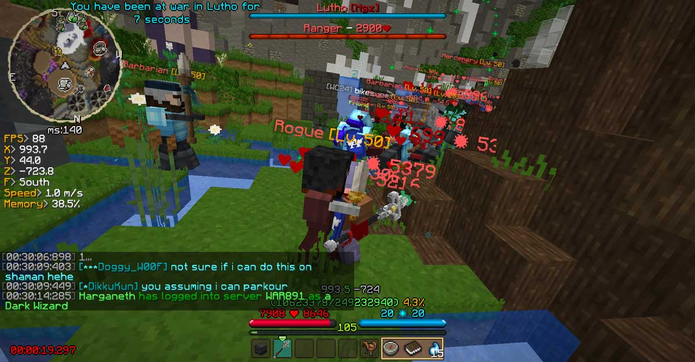
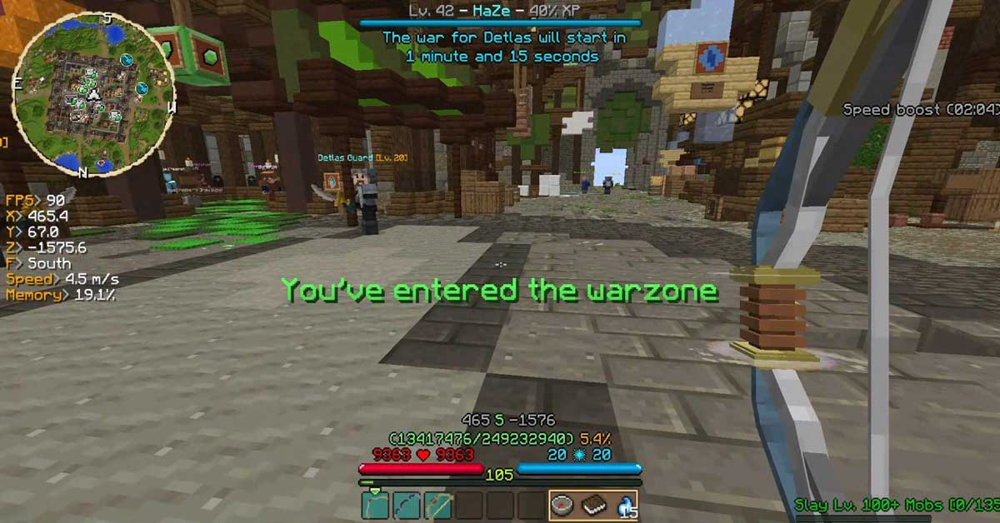
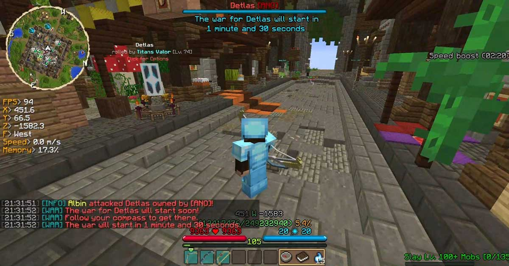
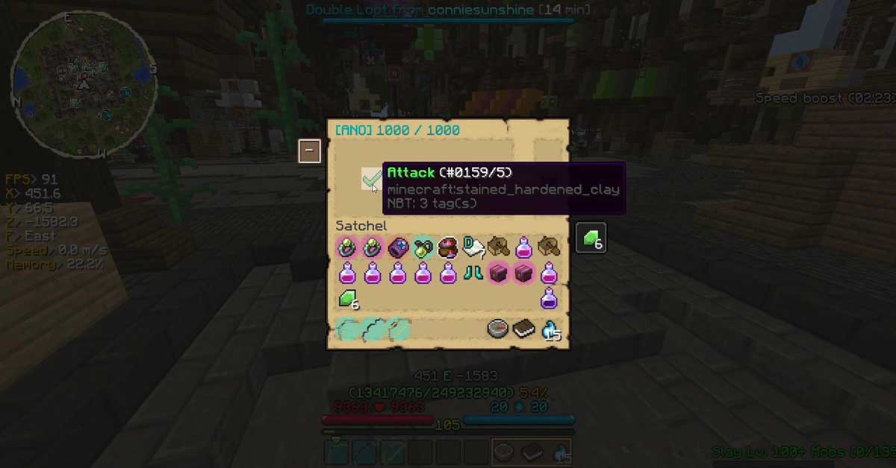
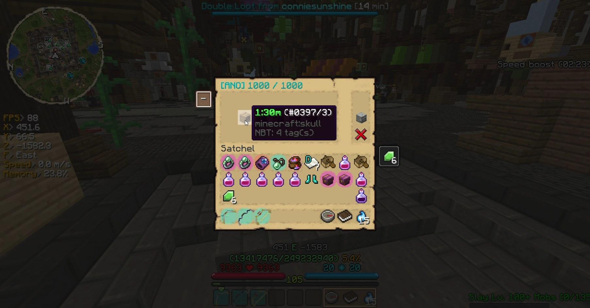
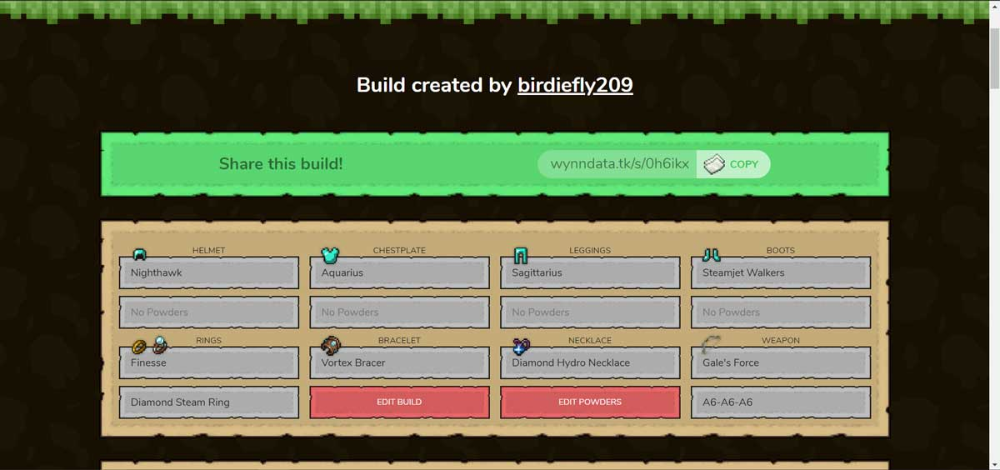
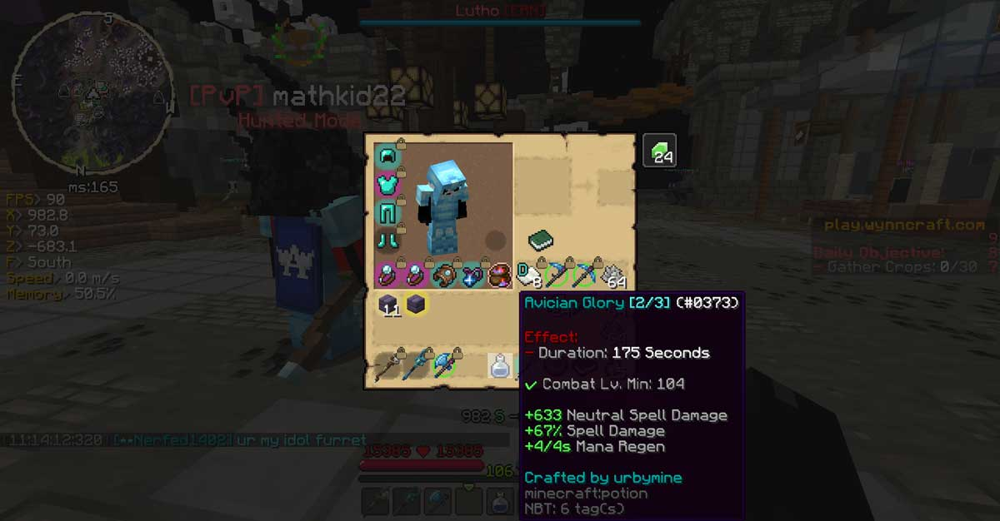
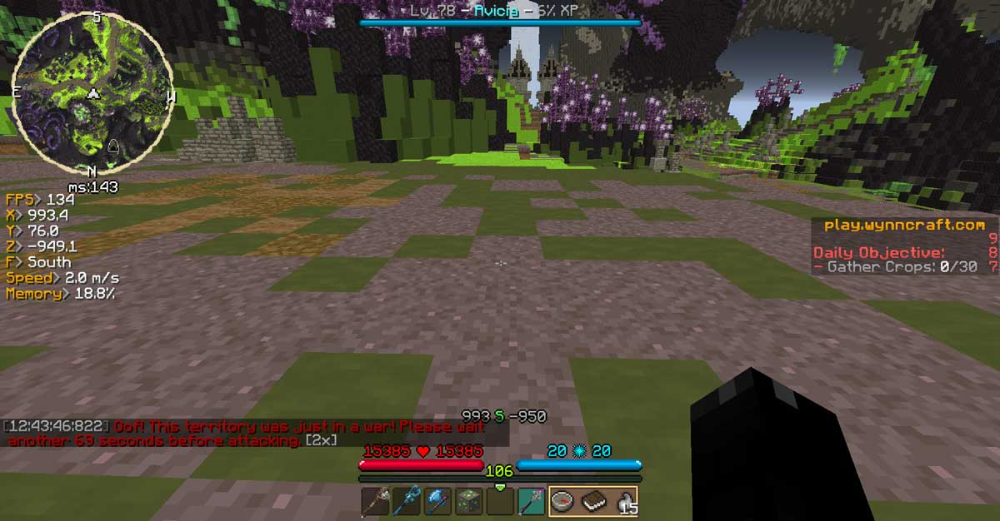
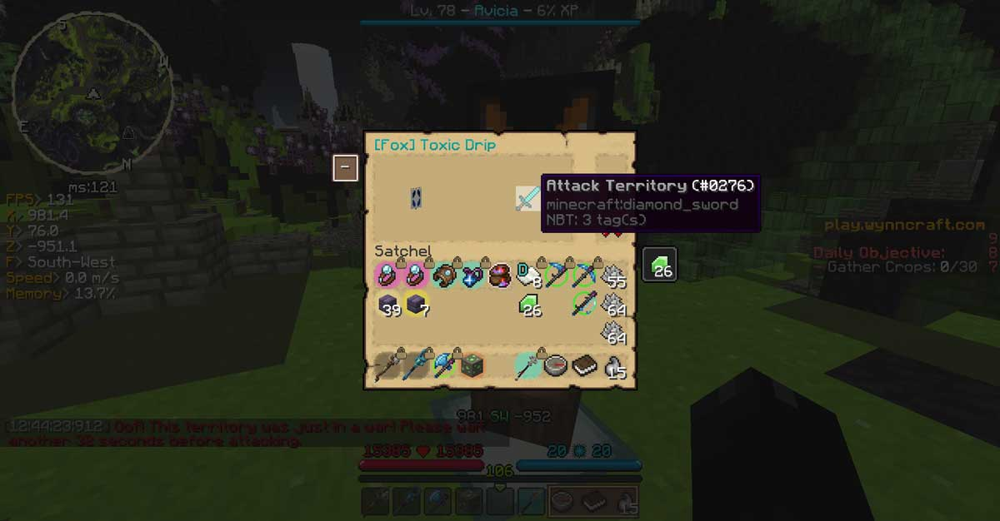
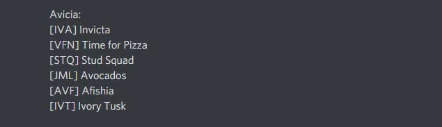

What is a War?
A war consists of killing up to 1000 mobs which are usually level 50.
When all of the mobs have been killed you take control of the territory.
If you lose a war by not managing to kill all the mobs within 20 minutes or if all participants die, the territory is kept by the previous owner and the defense on the territory will go down by the mobs killed during the failed war.
The mobs spawn faster the more player there are in a war. It caps at 4 players, so to complete a war as fast as possible you need at least 4 players.
Territories

The Wynncraft map is divided into territories such as the ones shown in the image.
Maps like the one in the image can be found on Wynntils (A Minecraft mod), Wynndata and Wynncraft's Website if you tick the "Show territories box".
Wars are about taking control of these territories, which gives the guild part of the XP and emeralds dropped in the territory.
Abbreviations
Many of the territories have long names and therefore abbreviations or nicknames are used instead of the full names.
Here are abbreviations from Avicia:
- Emerald Trail - ET / Cny
- Temple of Legends - ToL
- Herb Cave - Herb
- Battle Tower (Tower of Ascension) - ToA
- Bob's Tomb - Bobs
- Silent Road - SR
- Broken Road - BR
- Gray Zone - GZ
- Forgotten Town - Frog
- Sinister Forest - Sin
- Lutho - Lutoe
- Paths of Sludge - PoS / Sludge
- Toxic Drip - TDrip / Drip
- Toxic Caves - TCaves
- Void Valley - VV
- Gateway to Nothing - Gateway
- Sacrifice - Sac
- Bizarre Passage - BP
- The Gate - Gate
- Cinfras - Simp / Cinf
- Hive - HIVe
- Thesead - Despacito / Thes
- Lava Lake - LL
- Molten Reach - Fin / MR
- Raider's Base Lower - RBL / Roblox
Joining a War
To join a war you have to be in the territory that was attacked when the timer runs out.
Which territory was attack will be shown in the attack message in the chat and if you use Wynntils it will also be displayed at the top of the screen.
To know where the territories are you can use one of the maps mentioned in Territories.
If you don't use Wynntils you can follow your compass to get to the warzone.
Attacking
Captains or higher can attack a territory using the command /gu attack, which will prompt the menu shown in the image.
This menu shows which guild currently owns the territory and how many mobs they have defended, in this case ANO owns the territory and they have defended 1000 mobs
When you select Attack in the menu 5 different timers will show up. The 1:30m timer is generally the only timer used and it means that the war will start 1 minute and 30 seconds after the timer has been clicked.
Defending
Captains and higher can use the command /gu defend, which brings up the menu shown in the video.
The defense shown in the video is the standard defense, usually referred to as a "filler defense".
The filler defense consists of:
- 300 Lv. 50 Rangers
- 300 Lv. 50 Mercenaries
- 300 Lv. 50 Rogues
- 100 Lv. 50 Barbarians
Paths
A big part of warring is moving from territory to territory, here are a few paths you can follow for some of the more difficult territories.
To be able to use the /lootrun command you need to use the Minecraft mod Wynntils.
Cinfras to Hive
Download link: cinfhive.json
Cinfras to Thesead
Download link: cinfthes.json
Hive to Thesead
Download link: hivethes.json
Thesead to Lava Lake Bridge
Download link: thesllb.json
Molten Reach to Raider's Base Lower
Download link: mrrbl.json
Lava Lave Bridge to Hive
Download link: llbhive.json
Alliances

An alliance is an agreement between two or more guild where they assign each guild specific territories and refrain from attacking each other.
This image shows the territories in Gavel assigned by the alliance Artemis, which Avicia is in.
As you can see in the image there are FFA territorries, meaning Free For All. Every guild in the alliance is allowed to take control of those territories no matter who currently controls them. FFAs are the only territorries where you are allowed to attack an allied guild.
This map can be found in the Artemis discord which you can join when you get the captain rank in the guild.
A list of all FFA territories and Territories belonging to Avicia can be found in #information in Avicia's discord server.
If a guild outside of the alliance takes control of an ally's territory you might be able to help them reclaim their territory.
When reclaiming territories for allies make sure to coordinate with the guild you are helping. After taking a territory from an enemy guild, you usually defend 0 so that the guild can reclaim easily, you can message the guild’s captains+ online about which territory you’ve taken and/or if they need you to defend a certain amount of mobs. If there’s no captains+ in the guild that is online, ask in #war-discussions on the Artemis Discord if anyone is able to reclaim or defend 300 rangers if no one responds, the guild will be able to reclaim as soon as they can.
War Builds
To be able to win a war you will need a build that's strong enough to survive and beat any defense.
Here is an example of a strong war build for every class:
War Consumables
Using consumables is a way to make warring a lot easier, since consumables can boost your stats by a lot.
The biggest reason to why consumables are so good in wars is that using them in wars doesn't use up any of the charges, which means that you can use the same consumables in every war and they will never run out.
Really good consumables to use are the stat potions bought in the Ahmsord or Lutho Potion Merchant. They are cheap and will make warring a lot easier.
There are also crafted consumables like the one in the image that can for example give you a huge increase in damage or HP.
Here are some examples of crafted consumables:
- Tank Scroll
- High IQ Scroll (Mana Regen and Intelligence)
- Spell Damage Potion
- Super Tanky Potion
Sniping
When a guild has just taken control of a territory the territory gets a 3 minute cooldown which makes it so that nobody can attack it.
Attacking a territory right as the cooldown runs out is called "Sniping".
Sniping usually needs to be done as fast as possible because there are other guilds trying to snipe the same territory.
Almost every territory has a banner which you can use to attack and defend the territory.
Sniping a territory is usually done by using the attack option in the banner, it can also be done by repeatedly doing /gu attack or by timing the command with the cooldown.
If the territory is defended a timer has to be selected as fast as possible to win the snipe, if there are no mobs defended the territory instantly goes to whoever attacked it first, no timer is needed.
Sub Guilds
A sub guild is a guild which belongs to another guild.
Avicia's sub guilds are the ones shown in the image.
A sub guild can be used to reclaim your own or your allies territories more efficiently.
You use a sub guild by temporarily taking members from the main guild and placing them in a sub guild to war.
A sub guild only needs up to 4 members at the same time for the wars to be as fast as possible. That is why there are so many sub guilds, so more than one of them can be filled at the same time if there is an excess of players.